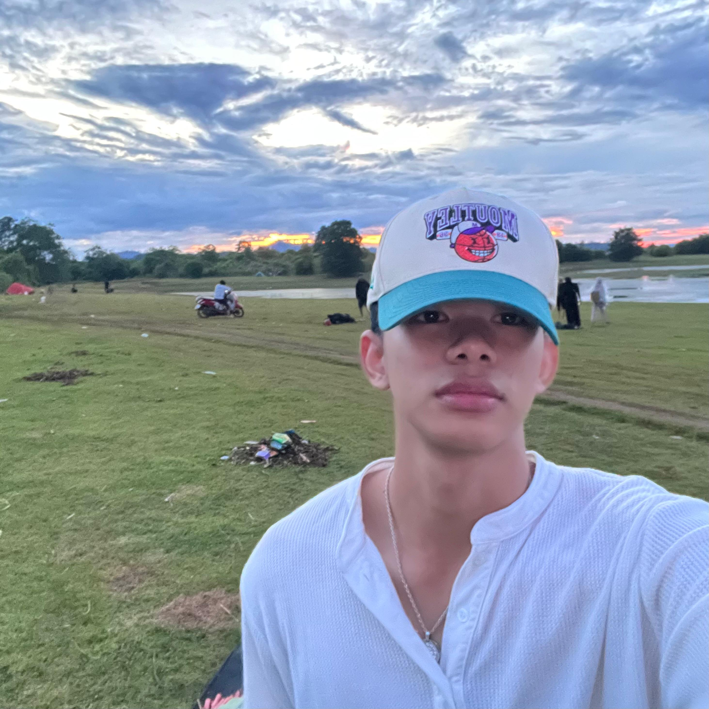

Founder & Web Designer
Saya adalah mahasiswa yang mengembangkan website TORELLI Coffee sebagai project UAS mata kuliah Pemrograman Web.
Website ini dirancang dari nol dengan pendekatan visual modern, minimalis, dan dekat dengan gaya hidup generasi urban.